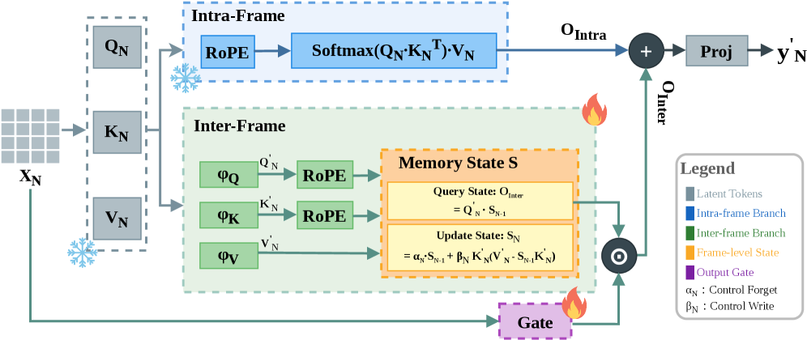

Institute of Artificial Intelligence · University of Central Florida
Autoregressive video diffusion models suffer from a critical bottleneck: quadratic compute complexity and a linearly growing KV cache, making long or streaming video generation prohibitively expensive.
We present ARL2 (Attend Locally, Remember Linearly), a hybrid attention architecture that enables efficient long-horizon video generation with constant-size temporal memory. With 75% of layers replaced by hybrid linear attention, ARL2 achieves up to 2.26× wall-clock speedup and 54% memory reduction, while maintaining comparable generation quality and improving temporal consistency.
ARL2 also provides a practical path to upgrading pretrained autoregressive video diffusion models, requiring only ~156 H100 GPU-hours and ~2% trainable parameters.
ARL2 replaces cross-frame attention in each transformer layer with a dual-branch module that handles spatial and temporal reasoning separately.
The intra-frame branch applies bidirectional softmax attention within each frame, preserving fine-grained spatial interactions. The inter-frame branch uses a Gated Delta Network recurrent state shared across all frames, compressing past context into a fixed-size state with constant memory regardless of sequence length.

Figure 2. The ARL2 attention module. Each layer splits tokens into an intra-frame softmax branch (local spatial attention) and an inter-frame linear recurrent branch (fixed-size gated state), whose outputs are summed to form the final representation.
ARL2 delivers substantial efficiency gains at long video lengths while maintaining generation quality and improving temporal consistency over the baseline.
At 1005 frames, the baseline exceeds 91 GB VRAM and runs out of memory. ARL2 completes the same sequence in 179 s using only 43 GB, enabling generation lengths that are simply impossible with standard attention.
@article{li2026arl2,
title = {Attend Locally, Remember Linearly: Linear Attention as
Cross-Frame Memory for Autoregressive Video Diffusion},
author = {Li, Kunyang and Shah, Mubarak and Shang, Yuzhang},
journal = {arXiv preprint arXiv:2605.16579},
year = {2026}
}